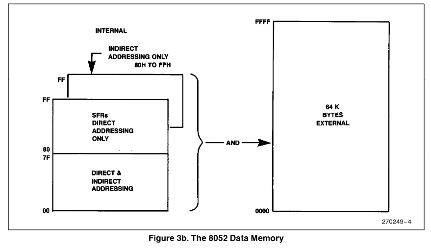

Intel MCS-51 编程及指令集手册¶
Intel MCS-51 Programmer’s Guide and Instruction Set 的翻译
存储器结构¶
程序存储器¶
8051 拥有独立地址空间（address spaces）的程序存储器（Program Memory）和数据存储器（Data Memory）。程序存储器可以长达 64KB， 较低（地址）的 4K（对 8052 来说是8K）可能位于芯片上（reside on-chip）


数据存储器¶
8051 可以寻址多达 64KB 的片外数据存储器。MOVX 指令被用于访问外置存储器（详细描述参考 MCS-51 指令集 章节）
8051 拥有 128 字节的片上 RAM （8052 是 256 字节） 以及一些特殊功能寄存器（Special Function Registers, SFRs）. 较低（地址）的 128 bytes 既可以被直接寻址（MOV data addr）也可以被间接寻址（MOV @Ri），图 3 展示了 8051 和 8052 的数据存储器结构。


间接寻址区域¶
注意图 3b 中 ，特殊功能寄存器（SFRs）和间接寻址 RAM 拥有相同的地址（80H-0FFFH）. 但是它们是用两种不同方式访问的，两块独立的区域
例如指令：
MOV 80H,#0AAH
MOV R0,#80H
MOV @R0,#0BBH
注意，栈操作（Stack Operation，把 Stack 翻译成堆栈这合理吗？）是间接寻址的实例，所以在那些实现 256 字节内置 RAM 的设备中，数据 RAM 的上部 128 字节可用作栈空间。
直接和间接寻址区域¶
可以通过直接和间接寻址访问的128字节的RAM可以分为3个部分（工作寄存器组区、位寻址区、数据缓冲区），如下图所示。

1. 寄存器组（Register Banks） 0-3：位置从 0 到 1FH （32字节）。ASM-51 和以及复位后的设备默认为组0（Bank 0），使用其他的寄存器组必须在软件（参考 MCS-51 Micro Assembler User's Guide）每个寄存器组包含了 8 个单字节寄存器，从 0 到 7 。
复位初始化栈指针（Stack Pointer，SP）到位置 07H 并且他被递增一次，从位置 08H 开始，，这是第二个寄存器组的第一个寄存器（RO）。因此，为了使用一个以上的寄存器组，SP应该被初始化到RAM中不用于数据存储的不同位置（即RAM的较高部分）。
2. 位寻址区（Bit Addressable Area）：该段有16个字节，20H-2FH。该段的128位中的每一位都可以被直接寻址（0-7FH）。
这些位可以用两种方式来指代，这两种方式都是ASM-51可以接受的。一种方式是参考它们的地址，即0到7FH。另一种方式是参考字节20H至2FH。因此，0-7位也可以称为20.0-20.7位，8-FH位与21.0-21.7位相同，以此类推。
本段16个字节中的每一个也可以作为一个字节来寻址。
3.数据缓冲区（Scrath Pad Area）：30H 到 7FH 字节可以作为数据RAM提供给用户。但是，如果堆栈指针被初始化到这个区域，应该留出足够数量的字节以防止 SP 数据被破坏。
特殊功能寄存器¶
表 1 包含了所有 SFR 及其地址的列表。
对比表 1 和图 5 可以看出，所有可寻址的字节和位的 SFR 都位于图 5 中的第一列(可以被8整除)。
| 符号 (Symbol） | 名称（Name） | 地址（Address） |
|---|---|---|
| *ACC | 累加器（Accumulator） | 0E0H |
| *B | 寄存器B | 0F0H |
| *PSW | 程序状态字（Program Status Word） | 0D0H |
| SP | 栈指针（Stack Pointer） | 81H |
| DPTR | 双字节数据指针（Data Pointer 2 Bytes） | |
| DPL | 低字节（Low Byte） | 82H |
| DPH | 高字节（High Byte） | 83H |
| *P0 | 端口 0（Port 0） | 80H |
| *P1 | 端口 1（Port 1） | 90H |
| *P2 | 端口 2（Port 2） | 0A0H |
| *P3 | 端口 3（Port 3） | 0B0H |
| *IP | 中断优先级控制（Interrupt Priority Control） | 0B8H |
| *IE | 中断使能控制（Interrupt Enable Control） | 0A8H |
| TMOD | 计时器/计数器模式控制（Timer/Counter Mode Control） | 89H |
| *TCON | 计时器/计数器控制（Timer/Counter Control） | 88H |
| *+T2CON | 计时器/计数器 2 控制（Timer/Counter 2 Control） | 0C8H |
| TH0 | 计时器/计数器 0 高字节（Timer/Counter 0 High Byte） | 8CH |
| TL0 | 计时器/计数器 0 低字节（Timer/Counter 0 Low Byte） | 8AH |
| TH1 | 计时器/计数器 1 高字节（Timer/Counter 1 High Byte） | 8DH |
| TL1 | 计时器/计数器 1 低字节（Timer/Counter 1 Low Byte） | 8BH |
| +TH2 | 计时器/计数器 2 高字节（Timer/Counter 2 High Byte） | 0CDH |
| +TL2 | 计时器/计数器 2 低字节（Timer/Counter 2 Low Byte） | 0CCH |
| +RCAP2H | T/C 2 捕获寄存器高字节（T/C 2 Capture Reg High Byte) | 0CBH |
| +RCAP2L | T/C 2 捕获寄存器低字节（T/C 2 Capture Reg Low Byte) | 0CAH |
| *SCON | 串口控制（Serial Control） | 98H |
| *SBUF | 串口数据缓冲（Serial Data Buffer） | 99H |
| PCON | Power Control | 87H |
> *表示可位寻址（Bit addressable） |
||
> +表示仅 8052 可用（8052 only） |
||
| ### 上电或复位后，SFR包含什么内容？ | ||
| 表 2 列出了特殊功能寄存器在上电或者硬件复位后的内容： | ||
 |
||
 |
本节列出了那些为各种功能分配了位的 SFR。提供每个位的简要说明以供快速参考。有关更多详细信息，请参阅本书的架构章节。
PSW：程序状态字（PROGRAM STATUS WORD）可位寻址¶
| CY | AC | F0 | RS1 | RS0 | OV | —— | P |
|---|---|---|---|---|---|---|---|
CY PSW.7 进位标志位（Carry Flag）
AC PSW.6 辅助进位标志位（Auxiliary Carray Flag）
F0 PSW.5 标志位0（Flag 0），可供用户用于一般用途
RS1 PSW.4 寄存器组选择位 1（Register Bank selector bit 1）（见附注 1）
RS0 PSW.3 寄存器组选择位 0 （见附注 1）
OV PSW.2 溢出标志（Overflow Flag）
—— PSW.1 用户可定义标志（User definable flag）
P PSW.0 奇偶校验标志，由硬件在每个指令周期内设置/清除，以指示累加器中的奇数/偶数的'1'位。
| RS1 | RS0 | 寄存器组（Register Bank） | 地址 |
|---|---|---|---|
| 0 | 0 | 0 | 00H-07H |
| 0 | 1 | 1 | 08H-0FH |
| 1 | 0 | 2 | 10H-17H |
| 1 | 1 | 3 | 18H-1FH |
PCON 电源控制寄存器（POWER CONTROL REGISTER），不可位寻址¶
| SMOD | —— | —— | —— | GF1 | GF0 | PD | IDL |
|---|---|---|---|---|---|---|---|
SMOD 双倍波特率位（doble baud rate bit）。如果定时器1倍用于生成波特率且SMOD=1，当串口被用于模式1,2,3时，波特率翻倍
—— 没有实现，保留给未来使用（Not implemented, reserved for future use.*）
—— 没有实现，保留给未来使用
—— 没有实现，保留给未来使用
GF1 通用用途标志位。（general purpose flag bit）
GF0 通用用途标志位。
PD 掉电模式位（Power Down bit）。设置这个位可以激活 80C51BH 的掉电模式操作（仅在采用CHMOS工艺的型号中可用）
IDL 空闲模式位（idle Mode bit）。设置这个位激活 80C51BH 中的空闲模式操作。（仅在采用CHMOS工艺的型号中可用）
如果同时向 PD 和 IDL 写入 1，PD 优先
*用户软件不应当向保留位写入1，这些位可能在未来的 MCS-51 产品中被用来调用新的功能，在这种情况下，新的复位或无效的值将为 0，其有效值将为 1。
中断：¶
为使用 MCS-51 中断任何中断，需要一下三步：
1. 设置 IE 寄存器中的 EA（enable all）位为 1
2. 将IE寄存器中的对应的独立的中断使能位设为 1
3. 在该中断的对应的向量地址处开始中断服务例程。见下表。
| 中断源 | 向量地址 |
|---|---|
| IE0 | 0003H |
| TF0 | 000BH |
| IE1 | 0013H |
| TF1 | 001BH |
| RI & TI | 0023H |
| TF2 & EXF2 | 002BH |
此外，为了外部中断（external interrupt），引脚 INT0 和 INT1 （P3.2 和 P3.3），必须被设为 1，并且取决于中断是电平（level）还是边沿触发（transition activated，电平转换触发？意思应该就是 edge triggered，边沿触发），TCON （Timer/Counter Control，计时器/计数器控制）寄存器中的 IT0（Inerrupt 0 type control bit. 中断 0 类型控制位） 或 IT1 （Inerrupt 1 type control bit. 中断 1 类型控制位）位可能被设为 1。
ITx = 0 电平触发（level activated）
ITx = 1 边沿触发（transition activated，有人也说跳变触发），实际上是下降沿触发（负跳变触发）
IE 中断使能寄存器（INTERRUPT ENABLE REGISTER），可位寻址¶
如果位为 0，则禁用相应的中断。如果位是 1，则启用相应的中断。
| EA | —— | ET2 | ES | ET1 | EX1 | ET0 | EX0 |
|---|---|---|---|---|---|---|---|
EA IE.7 禁用所有中断，如果EA = 0，没有中断将会被确认，如果 EA = 1，每个中断源地可独立地通过设定或其使能位开启或关闭
—— IE.6 没有实现，保留给未来使用*
ET2 IE.5 启用或禁用计时器 2 溢出或捕获中断（Timer 1 overflow interrupt）（仅 8052 可用）
ES IE.4 启用或禁用串口中断（serial port interrupt）
ET1 IE.3 启用或禁用计时器 1 溢出中断（Timer 1 overflow interrupt）
EX1 IE.2 启用或禁用外部中断 1 （External Interrupt 1）
ET0 IE.1 启用或禁用计时器 0 溢出中断（Timer 0 overflow interrupt）
EX0 IE.0 启用或禁用外部中断（External Interrupt 0）
*用户软件不应当向保留位写入1，这些位可能在未来的 MCS-51 产品中被用来调用新的功能，在这种情况下，新的复位或无效的值将为 0，其有效值将为 1。
为一个或者更多的中断设置更高优先级¶
为给一个中断设置更高的优先级，IP （Interrupt Priority Control，中断优先级控制）寄存器必须被设为1
请记住，当一个中断服务正在进行时，它不能被较低或同级别的中断所打断。
级别内优先级 (PRIORITY WITHIN LEVEL)¶
级别内的优先级只是为了解决同一优先级的同时请求。
从高到低，中断源列举如下：
- IE0（External Interrupt 0 edge flag，外部中断 0 边沿标志，位于 TCON 寄存器 ）
- TF0（Timer 0 Overflow Flag，计时器 0 溢出标志，位于 TCON 寄存器 ）
- IE1（External Interrupt 1 edge flag，外部中断 1 边沿标志，位于 TCON 寄存器）
- TF1 （Timer 1 Overflow Flag，计时器 0 溢出标志，位于 TCON 寄存器）
- RI 或 TI（Receive Interrupt Flag/Transmit Interrupt Flag 串口接收/发射中断标志，位于 SCON 寄存器）
- TF2 或 EXF2（Timer 2 Overflow Flag/Timer 2 External Flag，计时器 2 溢出/外部标志位，位于 T2CON 寄存器，仅 8052 可用）
IP （Interrupt Priority Register）中断优先级寄存器，可位寻址¶
如果该位为 0，相应的中断具有较低的优先级，如果该位为 1，相应的中断具有较高的优先级。
| —— | —— | PT2 | PS | PT1 | PX1 | PT0 | PX0 |
|---|---|---|---|---|---|---|---|
—— IP.7 没有实现，保留给未来使用*
—— IP.6 没有实现，保留给未来使用*
PT2 IP.5 定义了计时器 2 中断的优先级（仅限 8052）
PS IP.4 定义了串口中断的优先级
PT1 IP.3 定义了计时器 1 中断的优先级
PX1 IP.2 定义了外部中断 1 的优先级
PT0 IP.1 定义了计时器 0 中断的优先级
PX0 IP.0 定义了外部中断 0 的优先级
*用户软件不应当向保留位写入1，这些位可能在未来的 MCS-51 产品中被用来调用新的功能，在这种情况下，新的复位或无效的值将为 0，其有效值将为 1。
TCON （Timer/Counter Control Register）计时器/计数器控制寄存器，（时序控制），可位寻址¶
| TF1 | TR1 | TF0 | TR0 | IE1 | IT1 | IE0 | IT0 |
|---|---|---|---|---|---|---|---|
TF1 TCON.7 计时器 1 溢出标示值（Timer 1 overflow flag），当计时器/计数器 1 溢出时由硬件设置。当处理器转到中断服务程序（Interrupt Service Routine，ISR），由硬软件清除。（原句是 Cleared by hard-ware as processor vectors to the interrupt service routine.）
TR1 TCON.6 计时器 1 运行控制位（Timer 1 run control bit.），由软件设置/清零来打开/关闭 计时器/计数器 1
TF0 TCON.5 计时器 1 溢出标示值（Timer 0 overflow flag），当计时器/计数器 1 溢出时由硬件设置。在处理器向中断服务例程转移时，由硬软件清除。
TR0 TCON.4 计时器 1 运行控制位（Timer 0 run control bit.），由软件设置/清零来打开/关闭 计时器/计数器 1
IE1 TCON.3 外部中断 1 边沿标志（External Interrupt 1 edge flag），当外部中断边沿被检测到时由硬件设置，当中断被处理时由硬件清零
IT1 TCON.2 中断 1 类型控制位（Interrupt 1），由软件设置/清楚来指定下降沿/低电平触发的中断
IE0 TCON.1 外部中断 0 边沿标志（External Interrupt 0 edge flag），当外部中断边沿被检测到时由硬件设置，当中断被处理时由硬件清零
IT0 TCON.0 中断 0 类型控制位，由软件设置/清楚来指定下降沿/低电平触发的中断
TMOD：计时器/计数器模式选择寄存器（TIMER/COUNTER MODE CONTROL REGISTER）不可位寻址¶
| TIMER 1 | TIMER 0 | ||||||
| GATE | C/T | M1 | M0 | GATE | C/T | M1 | M0 |
GATE 当 TCON 寄存器中的 TRx 被设置，并且 GATE = 1，计时器/计数器x 仅在 INTx 位高电平（硬件控制）时运行，当 GATE = 0，计时器/计数器 x 仅在 TRx = 1 时运行（软件控制）
C/T 计时器计数器选择(Timer or Counter selector)，清零为计时器操作（输入来自内部系统时钟），设置为计数器系统（输入来自 Tx 输入脚）
M1 模式选择位（Mode selector bit）（附注1）
M0 模式选择位（Mode selector bit）（附注1）
| M1 | M0 | 操作模式（Operating Mode） | |
|---|---|---|---|
| 0 | 0 | 0 | 13 位计时器（兼容 MCS-48） |
| 0 | 1 | 1 | 16 位计时器/计数器 |
| 1 | 0 | 2 | 8 位自动重载计时器/计数器 |
| 1 | 1 | 3 | （计时器 0） TL0 是一个由 标准计时器 0 控制位控制的 8 位计时器/计数器 TH0 是一个由标准计时器 1 控制位控制的 8 位计时器 |
| 1 | 1 | 3 | (计时器1) 计时器/计数器 停止 |
计时器设置¶
表3至表6给出了一些TMOD的值，可以用来在不同模式下设置定时器0。
这里假定一次只使用一个定时器。如果希望在任何模式下同时运行定时器0和1，定时器0的TMOD值必须与定时器1的值进行OR（表5和6）。
例如，如果希望在模式1 GATE（外部控制）下运行定时器0，在模式2 COUNTER下运行定时器1，那么必须载入TMOD的值是69H（表3的09H与表6的60H的OR）。
此外，我们假设用户在此时还没有准备好打开定时器，而是在程序中的另一个时间点通过将位TRx（在TCON中）设置为1来实现。
计时器/计数器 0¶
作为计时器¶
| 模式 | 计时器 0 功能 | TMOD | |
| INTERNAL CONTROL(NOTE 1) |
EXTERNAL CONTROL(NOTE 2) |
||
| 0 | 13-bit Timer | 04H | 0CH |
| 1 | 16-bit Timer | 05H | 0DH |
| 2 | 8bit Auto-Reload | 06H | 0EH |
| 3 | Two 8-bit Timers | 07H | 0FH |
作为计数器¶
| 模式 | 计数器 0 功能 | TMOD | |
| INTERNAL CONTROL(NOTE 1) |
EXTERNAL CONTROL(NOTE 2) |
||
| 0 | 13-bit Timer | 00H | 08H |
| 1 | 16-bit Timer | 01H | 09H |
| 2 | 8bit Auto-Reload | 02H | 0AH |
| 3 | One 8-bit Counter | 03H | 0BH |
- 通过在软件中设置/清除TR0位来打开/关闭定时器。
- 当TR0=1时，定时器通过INT0（P3.2）上的1-0转换来打开/关闭（硬件控制）。
计时器/计数器 1¶
作为计时器¶
| 模式 | 计时器 1 功能 | TMOD | |
| INTERNAL CONTROL(NOTE 1) |
EXTERNAL CONTROL(NOTE 2) |
||
| 0 | 13-bit Timer | 00H | 80H |
| 1 | 16-bit Timer | 10H | 90H |
| 2 | 8bit Auto-Reload | 20H | A0H |
| 3 | Two 8-bit Timers | 30H | B0H |
作为计数器¶
| 模式 | 计数器 1 功能 | TMOD | |
| INTERNAL CONTROL(NOTE 1) |
EXTERNAL CONTROL(NOTE 2) |
||
| 0 | 13-bit Timer | 40H | C0H |
| 1 | 16-bit Timer | 50H | D0H |
| 2 | 8bit Auto-Reload | 60H | E0H |
| 3 | One 8-bit Counter | -- | -- |
- 通过在软件中设置/清除 TR1 位来打开/关闭定时器。
- 当 TR1=1 时，定时器通过INT1（P3.3）上的1-0转换来打开/关闭（硬件控制）。
T2CON （Timer/Counter 2 Control Register）计时器/计数器 2 控制寄存器，（时序控制），可位寻址，仅限8052¶
| TF2 | EXF2 | RCLK | TCLK | EXEN2 | TR2 | C/T2 | CP/RL2 |
TF2 T2CON.7 计时器2的溢出标志（Transmit clock flag）由硬件设置，由软件清除。TF2不能被设置，当 RCLK=1或CLK=1时，不能设置TF2。
EXF2 T2CON.6 定时器2外部标志（Timer 2 external flag）当T2EX上的下降沿引起捕获或重载时被设置，并且EXEN2 = 1。当定时器2中断被启用时，EXF2 e 1将导致CPU向量到定时器2中断程序。EXF2必须由软件来清除
RCLK T2CON.5 接收时钟标志（Receive clock flag）。当设置时，使串行端口在模式1和3中使用定时器2的溢出脉冲作为其接收时钟。RCLK = 0会使定时器1的溢出用于接收时钟。
TLCK T2CON.4 发送时钟标志（Transmit clock flag）。当设置时，导致串行端口在模式1和3中使用定时器2的溢出脉冲作为其发送时钟。TCLK = 0会使定时器1的溢出脉冲被用于发送时钟。
EXEN2 T2CON.3 定时器2外部使能标志（ Timer 2 external enable flag.）。当设置时，如果定时器2没有被用于串行端口的时钟，则允许在T2EX的负转换中发生捕获或重载。EXEN2 = 0使定时器2忽略T2EX的事件。
TR2 T2CON.2 计时器2的软件启动/停止控制（Software START/STOP control for Timer 2.）。一个 逻辑 1 启动定时器。
C/T2 T2CON.1 计时器或计数器选择。
0 = 内部定时器。
1 = 外部事件计数器（下降沿触发）。
CP/RL2 T2CON.0 捕获/加载标志。当设置时，如果 EXEN2 = 1，捕获将发生在 T2EX 的下降沿。当清零时，自动加载将在定时器 2 溢出或 EXEN2 = 1 时 T2EX 的下降沿发生。当RCLK = 1或TCLK = 1时，该位被忽略，定时器在定时器 2 溢出时被强制自动加载。
计时器/计数器 2 设置¶
除了波特率发生器模式，T2CON的数值不包括TR2位的设置。 因此，必须单独设置TR2位，以打开定时器。
作为计时器¶
| 模式 | T2CON | |
| INTERNAL CONTROL(NOTE 1) |
EXTERNAL CONTROL(NOTE 2) |
|
| 16-bit Auto-Reload | 00H | 08H |
| 16-bit Capture | 01H | 09H |
| BAUD rate generator receive & transmit same baud rate |
34H | 36H |
| receive only | 24H | 26H |
| transmit only | 14H | 16H |
作为计数器¶
| 模式 | T2CON | ||
| INTERNAL CONTROL(NOTE 1) |
EXTERNAL CONTROL(NOTE 2) |
||
| 0 | 16-bit Auto-Reload | 02H | 0AH |
| 1 | 16-bit Capture | 03H | 0BH |
- 捕获/加载仅在定时器/计数器溢出时发生。
- 捕获/加载发生在定时器/计数器溢出和T2EX(P1.1)引脚的1到0转换，除非定时器2被用于波特率生成模式中。
SCON: 串口设置寄存器（SERIAL PORT CONTROL REGISTER）可位寻址
| SM0 | SM1 | SM2 | REN | TB8 | RB8 | TI | RI |
|---|---|---|---|---|---|---|---|
|
NOTE 1:
| SM0 | SM1 | 模式 | 描述 | 波特率(Baud Rate) |
|---|---|---|---|---|
| 0 | 0 | 0 | 切换寄存器 | Fosc./12 |
| 0 | 1 | 1 | 8-bit UART | 可变 |
| 1 | 0 | 2 | 9-bit UART | Fosc/64 或 Fosc./32 |
| 1 | 1 | 3 | 9-bit UART | 可变 |
串口设置¶
表9¶
| MODE | SCON | SM2 的变化 |
|---|---|---|
| 0 | 10H | 单处理器环境（SM2 = 0） |
| 1 | 50H | |
| 2 | 90H | |
| 3 | D0H | |
| 0 | NS | 多处理器环境（SM2 = 1） |
| 1 | 70H | |
| 2 | B0H | |
| 3 | F0H |
产生波特率（GENERATING BAUD RATES）¶
模式 0 的串口（Serial Port in Mode 0）:¶
模式 0 有一个固定的波特率，是振荡器频率的 1/12。要在这种模式下运行串口，不需要设置任何的 定时器/计数器都不需要被设置。只有 SCON 寄存器需要被定义。
模式 1 的串口（Serial Port in Mode 0）:¶
模式1有一个可变的波特率。波特率可以由定时器1或定时器2产生（仅8052）。 要用于此用途，定时器1被用于模式2（自动重载）。请参考本章的定时器设置部分。
TH1 必须是一个整数值。将 TH1 四舍五入(Rounding off)到最接近的整数可能不会产生所需的波特率。在这种情况下，用户可能不得不选择另一种晶体频率。
由于PCON寄存器是不可寻址的，设置该位的一种方法是对PCON寄存器进行逻辑OR。(即ORL PCON,Ý 80H)。PCON的地址是87H。
使用定时器/计数器2来产生波特率。¶
为此，必须在波特率产生模式下使用定时器2。请参考本章的定时器2设置表。如果定时器2通过引脚T2（P1.0）进行时钟控制，则波特率为：
而如果是内部时钟，那么波特率就是:
为了获得RCAP2H和RCAP2L的重载值，上述公式可以改写为：
模式2中的串行端口。¶
在这种模式下，波特率是固定的，是振荡器频率的（/32）或（/64），取决于PCON寄存器中SMOD位的值。在这种模式下，不使用任何定时器，时钟来自内部的 2 相时钟。
SMOD = 1, Baud Rate = 1/32 Osc Freq.
SMOD = 0, Baud Rate = 1/64 Osc Freq.
要设置SMOD位。ORL PCON,#80H。PCON的地址是87H。
模式3下的串行端口。¶
模式3中的波特率是可变的，其设置与模式1中完全相同。